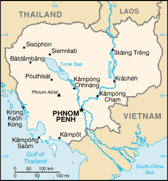
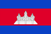

[Voir le carnet de route du Cambodge]
Itinéraire prévisionnel :
 Sihanoukville
Sihanoukville
 Phnom Penh
Phnom Penh
 Udong
Udong
 Kompong Luong
Kompong Luong
 Angkor
Angkor
 
Superficie : 181 035 km² (trois fois plus petit que la France)
Population : 13,1 millions
Capitale : Phnom Penh
Peuples et ethnies : 90-95% de Khmers, 5% de Vietnamiens et Chinois
Langues : khmer, français, anglais
Religions : environ 95% de bouddhistes, animistes et musulmans
Institutions politiques : ancienne "démocratie populaire", mise en place par les Vietnamiens en 1979, le Cambodge est devenu une monarchie constitutionnelle à la suite des Accords de paix de Paris et des élections de 1993.
Principales activités : le caoutchouc fut longtemps la principale source d’exportation du pays. Cette activité a récemment été supplantée par l’exploitation sauvage du bois. Mais dans ce pays rural, aux infrastructures industrielles peu développées et aux voies de communication limitées, l’aide internationale constitue de loin la première source de revenus. Une grande partie de la population survit en cultivant le riz ou en se nourrissant des produits de la pêche dans les eaux du Tonlé Sap.
Visa : nécessaire pour la France, disponible à certaines frontières terrestres, 1000 Baths à Bangkok
Monnaie : le Riel (1 € = 4912 Riel en 2004) mais les cambodgiens préfèrent le dollar américain à leur monnaie.
Budget quotidien : 12 à 20 US $/jour.
- Consulat :
4 rue Adolphe Yvon, 75116 Paris.
Tél. : 01 45 03 47 20. - Espace Cambodge :
98 rue d’Aubervilliers, 75019 Paris.
Tél : 01 40 35 57 40. Consultation d’ouvrages sur le pays.
Ambassade de France :
| Adresse | 1 bld Monivong BP 18 |
| Ville | Phnom Penh |
| Téléphone | (855 23)430 020 à 023 |
| Fax | (855 23)430 037 & 430 038 |
| URL | http://www.ambafrance.gov.kh |